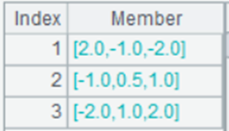
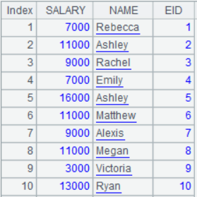
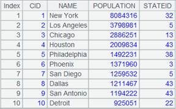
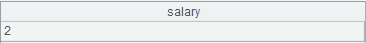
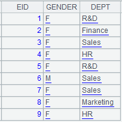
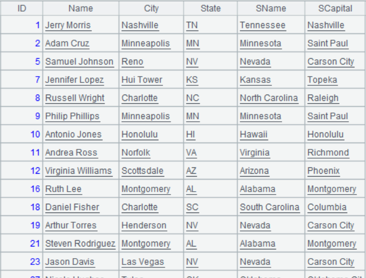
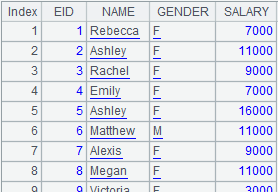

Description:
Get specified field(s) from a composite table according to correspondence between its key values and the fields in a table sequence or a cursor, and return result as a table sequence or a cursor.
Syntax:
T.new(A/cs:K,x:C,��;wi,...)
Note:
The composite table T and table sequence A or cursor cs have a relationship of one-to-many. The function matches T��s key/dimension field with fields of A/cs (begin the correspondence from the first field) and returns T��s records according to the correspondence. It is already known that A/cs��s first one or two fields have same order as T��s key value field. With a table sequence, the function returns a table sequence, and with a cursor, it returns a cursor or a multicursor.
Without @r option, the function supports an aggregate operation. In this case, T should be the primary table and A/cs should be the subtable, on which the aggregation is performed.
Parameter:
|
T |
A composite table |
|
A/cs |
A table sequence/cursor |
|
K |
Field names; when there are K�� parameters after A/cs, correspond them with theses specified fields |
|
x |
Field values |
|
C |
Column alias; can be absent |
|
wi |
Filtering condition; separate multiple conditions, which should all be met, by comma(s) |
Option:
|
@r |
Copy records of the primary table and return result set aligned by A/cs |
Return value:
A table sequence or a cursor
Example:
|
|
A |
|
|
1 |
=file("D:/Employee.ctx").open() |
Open a composite table  |
|
2 |
=demo.query("select SALARY,NAME,EID from EMPLOYEE order by EID") |
Return a table sequence ordered by EID in ascending order  |
|
3 |
=A1.new(A2:EID,NAME,GENDER) |
Retrieve fields of the composite table according to the correspondence between the table sequence��s EID and the composite table��s primary key  |
|
4 |
=demo.cursor("select * from EMPLOYEE order by EID") |
|
|
5 |
=A1.new(A4,NAME:EMPName,GENDER:EMPGender).fetch() |
Retrieve the other fields of the composite table by matching the cursor��s first field with the composite table��s primary key  |
|
6 |
=demo.query("select EID from employee where EID<10 ") |
|
|
7 |
=A1.new(A6,EID,GENDER,SALARY;GENDER=="F",SALARY>2000) |
Retrieve fields where Gender is "F" and SALARY is greater than 2000 from the composite table by matching the table sequence��s first field with the composite table��s primary key  |
|
8 |
=file("D:/pdm/sale.ctx").open() |
Below is content of composite table:
|
|
9 |
=demo.query("select OrderID as ID,Quantity as amount from OrderDetail where OrderID<10251") |
 |
|
10 |
=A8.new(A9,ID,(sum(AMOUNT)):TOTAL) |
Perform aggregation on field values in the subtable  |
|
11 |
=A8.new@r(A9,ID,AMOUNT,PRICE) |
With @r option, align records of primary table A8 by A9, and copy the former��s records:
|